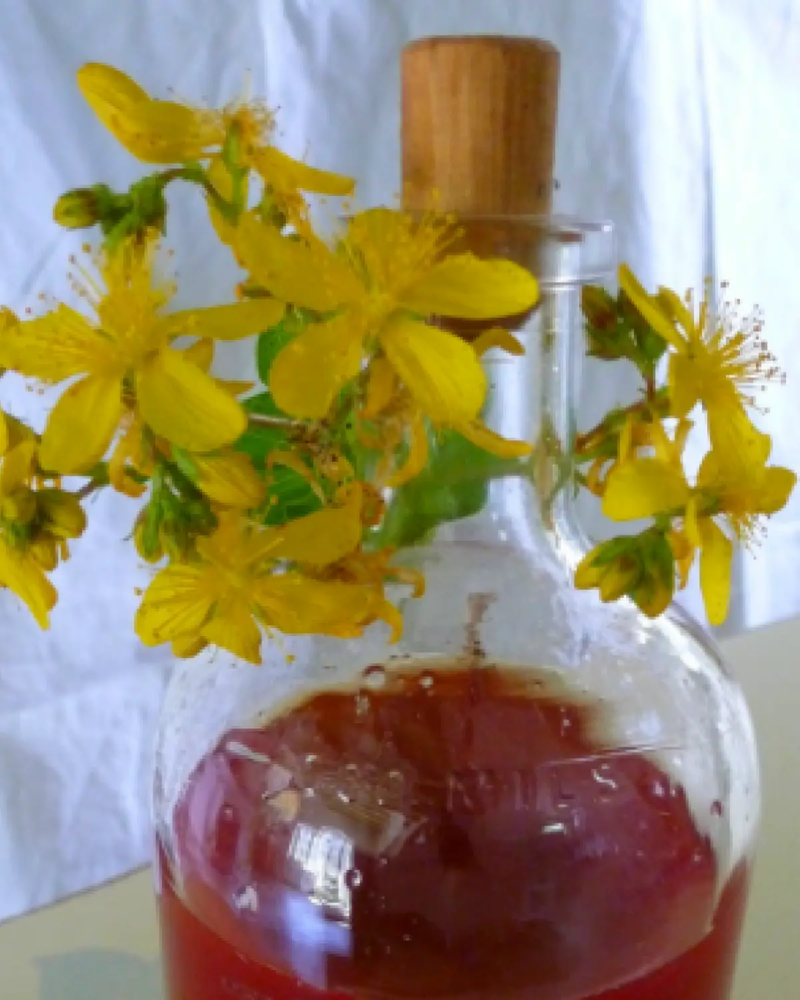

Quatre
Spatholado ou huile de millepertuis
Le Spatholado — huile de millepertuis — est reconnu pour ses nombreuses propriétés. C’était un remède réputé chez les Spartiates de l’Antiquité, qui s’en servaient pour soigner leurs blessures après les combats, et il reste un « remède incontournable » depuis l’Antiquité jusqu’à nos jours.
Les fleurs s’épanouissent du début du mois de mai jusqu’en juin. Officiellement appelée Hypéricon, c’est l’une des fleurs les plus courantes de la flore grecque et elle pousse sur les terres en friche. La plante se distingue non seulement par sa couleur jaune vif, mais aussi par ses propriétés antidépressives, antiseptiques, antioxydantes, anti-inflammatoires, astringentes et cicatrisantes. Elle soulage également la sciatique, les douleurs rhumatismales, les douleurs articulaires, les contusions et les brûlures au premier degré, et est idéale pour les massages thérapeutiques et relaxants.
Sa préparation est simple. La fleur doit être cueillie le matin et préparée fraîchement récoltée. Le spatholado mûrit au soleil pendant environ 40 jours, en macérant dans une huile d’olive de grande qualité, et prend une couleur rouge profond avant d’être conservé dans un endroit lumineux.
Nous insistons sur ce point : le secret vient de l’huile d’olive, et nous utilisons celle que nous produisons nous-mêmes. Le spatholado que l’on trouve ailleurs est souvent de mauvaise qualité, fabriqué avec diverses graines et huiles qui lui donnent une couleur peu naturelle. Il ne doit jamais être conservé dans du plastique — uniquement dans du verre — et se garde environ un an.
REMARQUE : cette huile ne doit pas être utilisée en journée au soleil, ni par les femmes enceintes.